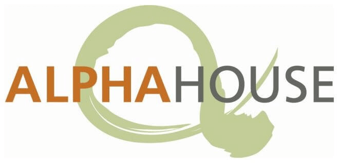

Internships
Google STEP Intern
June 2024 - Sept 2024 (Manhattan NYC)
Worked within Android Core Experiments and Gantry to develop and implement new feature flags for project workflows using Java, TypeScript, Guice (dependency injection), and Redux. Designed and implemented Remote Procedure Calls to enable seamless backend communication, and developed numerous frontend features where the RPCs were integrated, resulting in dynamic and user-friendly interfaces. Optimized and tested features in order to ensure seamless integration, performance, and effectiveness. Collaborated effectively within cross-functional teams, leveraging strong communication and problem-solving skills to drive project success and ensure alignment with overall goals.
Electrical and Computer Engineering Dept. Software Intern
March 2023 - Sept (San Diego, California)

Worked with Professors Curt Schurgers and Ramsin Khoshabeh to design and create an enhanced access control system for numerous spaces at UCSD including the ECE MakerSpace and Envision Lab. My work is largely based as a backend developer where I utilize tools such as MySQL, TypeScript, Express.js, and Node.js to create a centralized database and server capable of storing numerous data records and efficiently handling data retrieval and manipulation operations. Through this process, I developed and implemented RESTful APIs utilizing HTTP methods to enable seamless communication between our client’s backend systems, in order to ensure efficient data retrieval, manipulation, and storage operations.
Alpha House Society Desktop Support Intern
June 2022 - July 2022 (Alberta, Canada)
Alpha House Society is a non-profit, charitable agency dedicated to helping the vunerable population. Within Alpha House, I designed and implemented a program that filters and categorizes new employee data records for simpler and more efficient data entry into the company’s database system using Python. In addition, I helped to manage and administer IT support across multiple departments through installing operating systems, software applications and responding to user requests.
Sponsor Energy Inc. Marketing and IT Intern
June 2021 - Aug 2021 (Alberta, Canada)
Within Sponsor Engery, a electrical and utility company, I worked to design and create an FAQ page for the company website using HTML, CSS, and PHP In addition, I also worked on remodeling and redesigning the client billing platform into a more user friendly interface using React.js and JavaScript. Lastly, I was also responsible for and led projects related to customer communication, product competitiveness, and marketing analysis where I produced a 20+ page price model to increase market penetration.